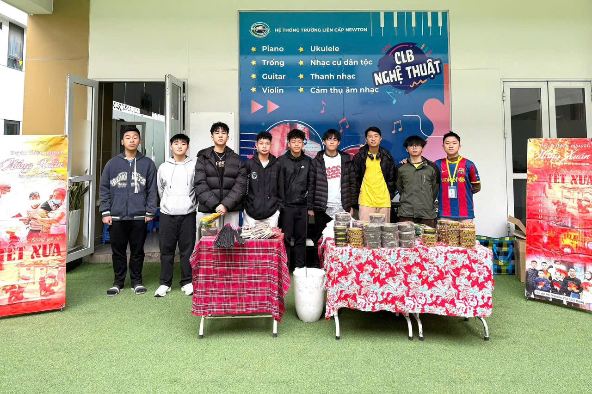

Ngô Quý Dương
Student | Math & Data Science Enthusiast | Future Innovator

Student | Math & Data Science Enthusiast | Future Innovator
Every experience has given me invaluable lessons. My charitable activities with the "Thắp Nắng" group are not merely an expression of our affection for less fortunate children and peers, but also made me realize that each of us must contribute our own small part to collectively build a better world. These actions also help us become more grateful for what we have. Whenever I face difficulties or pressure in my studies and life, I look back on these experiences and motivate myself for one simple reason: the life I have are the dream of countless other children who only wish for an ordinary life. Therefore, as I grew up, I do not easily give up upon challenges as I did before anymore.
Participating in sports activities not only improves my health but also helps me bond with a team and learn the essential skills needed to build a united, strong community that works towards a common goal.
Visits and experiential activities in academic and professional environments have given me broader perspectives on various careers, thereby helping me build a more solid foundation for my future career path.
To me, every single experience is precious, and together, they will form the accumulated assets I carry on my journey to conquer the summits that lie ahead.
The charity group "Thap Nang" was founded in January 2024 by a group of former primary school classmates from different high schools in Hanoi. We came together with the shared goal of spreading love and supporting underprivileged communities across Vietnam.
After nearly two years of operation, we have successfully organized several charitable trips to various provinces throughout the Vietnam.
Our main activity involves the sale of Chóa village (Bắc Ninh) traditional incense products. All profits are used to fund our charity trips. We chose this product not only for its health benefits as a clean, natural incense, but also to help preserve the traditional incense-making craft of Chóa Village in Bắc Ninh.
Our field trip to Chóa Village in Bắc Ninh was truly unforgettable. We visited to learn about the traditional process of making their famous black incense and had an opportunity to try making it ourselves. This valuable experience helped us appreciate this tradition of Chóa Village. Moreover, by using only natural ingredients and no chemicals, the village contributes to protecting consumers' health.

Our charity group organized an in-school sale of traditional black incense. We sourced the product directly from Chóa Village in Bắc Ninh. We leveraged a major event at Newton School, timing the sale with the Lunar New Year when demand rises significantly among Vietnamese families. Moreover, all profits generated were dedicated to charitable activities, with the aim of helping the disadvantaged people in Vietnam.
We organized a meaningful charity visit to the National Institute of Hematology and Blood Transfusion to support pediatric patients undergoing long-term treatment. The team prepared gifts, small financial aid, and interactive activities aimed at bringing cheer and motivation to the children and their families. This activity is not only aimed at making a small contribution to support less fortunate children, but through it, our group also became more aware of the importance of health and felt truly fortunate to be able to study and live normally.
Born healthy and privileged to receive the best education, our group always focuses on children—not only because they are at an age we have just experienced ourselves, but also because they represent the future of our country. Sharing a part of our fortune with them is not only an act of compassion but also a reflection of the younger generation’s responsibility toward the more vulnerable in society.
After successfully organizing charity trips in Hanoi, we decided to expand our reach to neighboring provinces. Our visit to the Sao Mai Care Center in Vĩnh Phúc was a meaningful experience. We brought small gifts with the hope of supporting the orphaned children living there.
Besides, we collaborated with several other projects to introduce the children to robotics and Rubik's cubes. This aimed to provide them with access to new experiences and inspire curiosity.
I have developed a great passion for football since I was very young and have been a key player in my class team. Over the years, I have earned several achievements, including three consecutive school championships in lower secondary school, followed by a third-place finish in 10th grade and a second-place finish in 11th grade.
Participating in this race not only helps improve health but also contributes a small amount of funding to support People with Disabilities.
Participating in VTV's "Super Mental Math" intellectual contest was a memorable experience, highlighted by a spectacular comeback in the final round. It was the first time I had ever been on a TV show.
We organized this event with the goal of bringing robotics to children in Nam Định province. Witnessing their excitement when being introduced to such a novel field was a joyful and memorable experience for me. This initiative highlighted the importance of community outreach and using technology as a tool for inspiring the next generation.
We connected with Mr. Dương Dũng Triều, Chairman of FPT Corporation, and asked to organize a learning session with him. This visit provided us with valuable knowledge about future careers and professional development in the technology sector. Below is a photo taken with the company's Chairman.
We connected with the Chairman of EY Vietnam and organized an experiential tour of the firm's headquarters. This visit provided me with invaluable practical knowledge about the economy and financial matters. The opportunity to interact with industry leaders gave me a deep understanding of the professional world of auditing and consulting. Below is a photo with the Chairman.

Despite having no time to join the STEM team because I was busy studying for the National Math Olympiad, my love for Math and STEM led me to sign up as an observer to experience a regional-scale competition held in China. The journey gave me many impressions and lessons, from observing the team's organization and task delegation to seeing the professionalism of international students in STEM.
I had the unforgettable opportunity to experience and learn about aircraft operations and manufacturing processes during a tour of Vietnam Airlines' head office. This visit provided a wealth of valuable knowledge about the complex logistics and engineering aspects of the aviation industry. Additionally, I participated in a small Q&A competition about the firm's history and services and was proud to win the third prize, demonstrating my quick assimilation of new information.
The experience provided me with a comprehensive overview of my intended field of study and the future career opportunities it offers. I had a chance to attend the trial Data Science class, which gave me fundamental knowledge about data, forming a foundation for my future studies. This visit reaffirmed my passion for Math & Data Science and highlighted the importance of Data Science in comtemporary world.
After achieving success in various math competitions and the SAT exam, I decided to become a teaching assistant at educational centers, with the desire to share my passion and learning inspiration with other students. I worked at a math center from January to June 2025, and I am currently working as an SAT teaching assistant at a center in Vietnam. My goal has always been to approach teaching with enthusiasm, deliver easy-to-understand lessons, and help as many students as possible.
Driven by my passion for geometry, I have written this book to explore key theorems and problems. My aim is to provide younger students with a stronger foundation and to introduce them to a diverse range of geometry problems.
by Ngô Quý Dương
A comprehensive collection of plane geometry problems and solutions
Note: Make sure the PDF file is in the same directory as this HTML file, or update the file path accordingly.